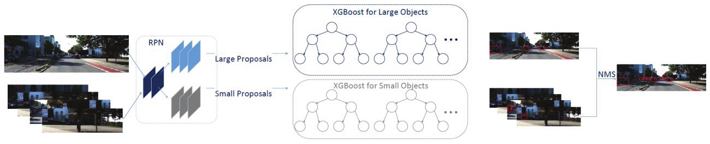
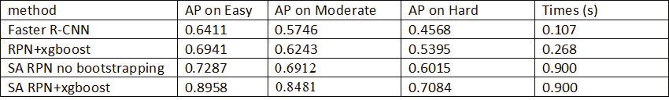
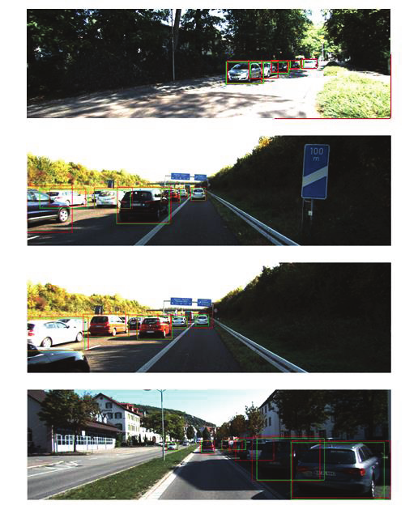

Vehicle Detection
| Yong Wang, Robert Laganiere University of Ottawa Ottawa, ON, Canada |
Daniel Laroche, Changyun Zhu, Xiaoyin Xu, Ali Ors NXP Semiconductors Ottawa, ON, Canada |
|---|---|
| Questions? Drop us a line | |
Overview
In this paper, we develop a scale-aware Region Proposal Network (RPN) model to address the problem of vehicle detection in challenging situations. Our model introduces two built in sub-networks which detect vehicles with scales from disjoint ranges. Therefore, the model is capable of training the specialized sub-networks for large-scale and small scale vehicles in order to capture their unique characteristics. Meanwhile, high resolution of feature maps for handling small vehicle instances is obtained. The network model is followed by two XGBoost classifiers with bootstrapping strategy for mining hard negative examples. The method is evaluated on the challenging KITTI dataset and achieves comparable results against state-of-the-art methods. Our work was accepted to the 13th International Symposium on Visual Computing
Algorithm Overview
Our approach consists of two components, and the overall architecture is illustrated in Figure 2. The scale-aware RPN model aims at better detecting small scale objects around the vanishing point by exploiting the image inherent perspective geometry. We propose one sub-network to detect the object in the region around the vanishing point. Another one sub-network is used to detect the object in the entire image. The region around vanishing point is then re-scaled and receives finer processing by the sub-network. In this way, small distant objects are untangled from large near objects for detecting. Two XGBoost classifiers apply to these proposals using these convolutional features which are generated by the RPN.

Performance
We evaluate the run-time performance of our final model on a 681x227 input image on 3 different systems:

Demo
We evaluate the run-time performance of our final model on a 681x227 input image on 3 different systems:

Navigation
Industry Partners
Thank you to NXP Semiconductor for making this work possible!